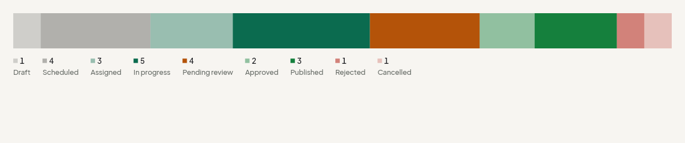
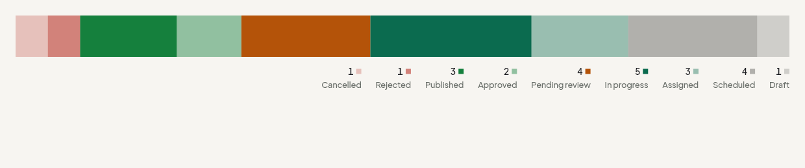
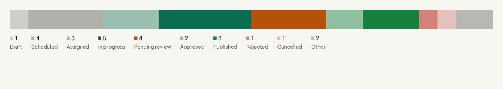
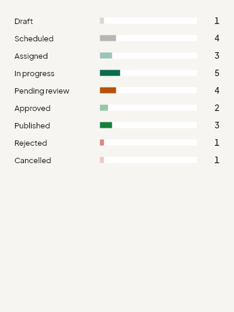
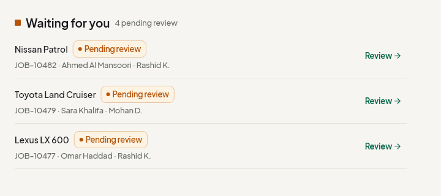
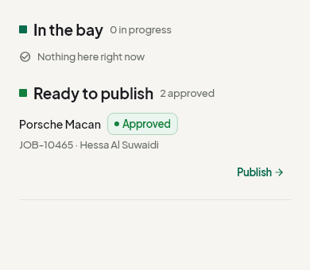
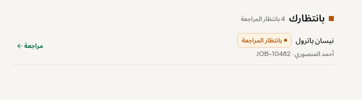
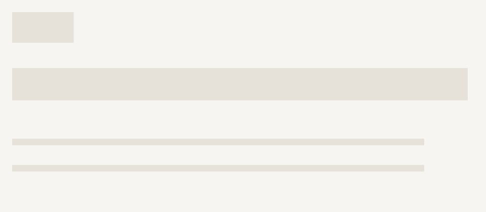
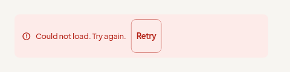
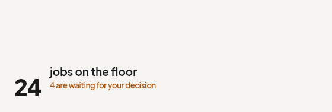

Every primitive this screen needs, in every state it can take, LTR and RTL,
light only (waiver W-LIGHT). Captured from the production widgets with the bundled fonts.
Partition

Atlas — 9 segments + legend (LTR)

Atlas — RTL, mirrored

Atlas — total 26 with a 2-job "Other" tail

Spine — below 768 px
Groups and rows

Group header + rows + inline verb

Empty group + phone row with verb below

Group + row in Arabic (RTL)
States

Loading — no placeholder numbers

Bounded error + retry

Hero numeral + decision sentence
Truth rules visible in this gallery: the bar is never rescaled; a zero-count
stage keeps its legend entry but draws no segment; a known-status gap appears as a
neutral "Other" tail with the total unchanged; errors never render a number; loading
never renders a plausible figure.